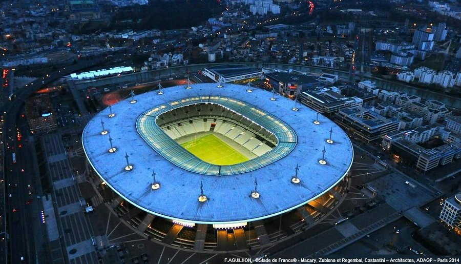

2022 Stade de France Saint-Denis Francia

Nombre del estadio: Stade de France
Ubicación: Saint-Denis, Francia (a 9 km al norte de París).
Capacidad: Aproximadamente 80,698 espectadores.
Inauguración: 28 de enero de 1998.
Propietario: Gobierno de Francia.
Características destacadas:
Diseño moderno: El estadio tiene un diseño ovalado con un techo retráctil que cubre las gradas.
Uso multifuncional: Además de partidos de fútbol, el estadio alberga conciertos, eventos de rugby y competiciones de atletismo.
Accesibilidad: Está bien conectado con el transporte público de París, incluyendo metro, tren y autobuses.
Historia: Fue construido para la Copa Mundial de la FIFA 1998, donde Francia ganó su primer título mundial.
Eventos importantes albergados en el Stade de France
El Stade de France ha sido sede de numerosos eventos importantes, entre ellos:
Final de la UEFA Champions League 2022: Real Madrid vs. Liverpool.
Copa Mundial de la FIFA 1998: Francia ganó su primer título mundial en este estadio.
Final de la Eurocopa 2016: Portugal vs. Francia.
Conciertos: Ha albergado conciertos de artistas internacionales como U2, Madonna y Coldplay.
Ubicación y cómo llegar
Dirección: Stade de France, Rue Francis de Pressensé, 93216 Saint-Denis, Francia.
Transporte público:
Metro (RER): Línea B, estación La Plaine - Stade de France.
Tren: Línea D, estación Stade de France - Saint-Denis.
Autobús: Varias líneas de autobús conectan el estadio con París y sus alrededores.
Acceso en coche: El estadio cuenta con un amplio estacionamiento, pero se recomienda llegar temprano debido a la alta afluencia de público en eventos importantes.
Datos curiosos
El Stade de France es el estadio nacional de Francia y ha sido sede de numerosos eventos deportivos y culturales.
Fue el primer estadio del mundo en albergar una final de la Copa Mundial de la FIFA y una final de la UEFA Champions League.
El estadio fue diseñado por los arquitectos Michel Macary, Aymeric Zublena, Michel Regembal y Claude Costantini.